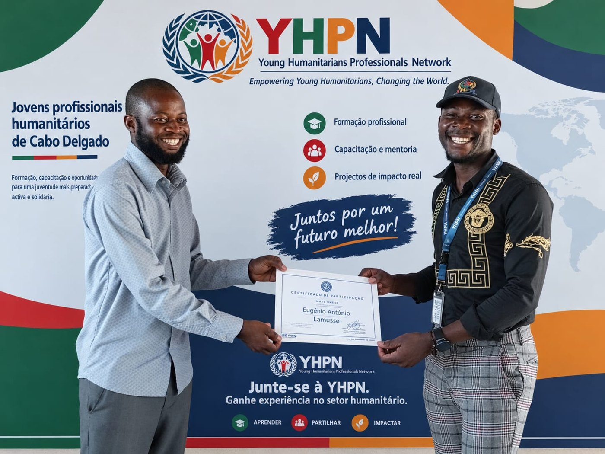
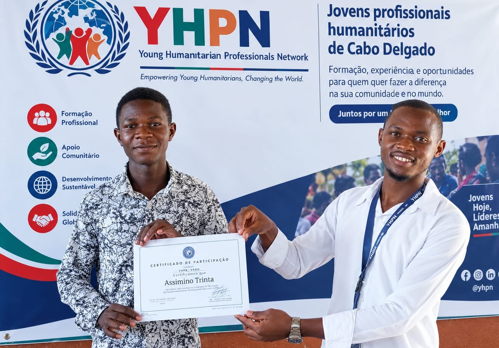

Associação Juvenil · Pemba, Cabo Delgado
Empowering Young Humanitarians. Changing the World.
A Young Humanitarian Professionals Network (YHPN) reúne jovens profissionais e voluntários interessados no setor humanitário, na liderança juvenil e no desenvolvimento das suas comunidades.
Capacitação
Experiência
Oportunidade
Liderança
Impacto

Quem Somos
Acreditamos no potencial dos jovens para transformar comunidades.
Trabalhamos para aproximar os jovens do setor humanitário e criar condições para o seu crescimento pessoal e profissional.
Conheça a nossa história
O Que Fazemos
Programas que capacitam jovens e fortalecem comunidades.
Mentoria & Carreira
Acredita em Ti
Palestras, orientação profissional e mentoria para adolescentes e jovens.
Saber mais → AmbienteCosta Limpa
Limpeza de praias e zonas costeiras, mobilizando jovens e comunidades.
Saber mais → FormaçãoFormação e Capacitação
Formações com certificado em Ajuda Humanitária, Liderança e Educação Inclusiva.
Saber mais →Faça parte da nossa rede.
Junte-se a nós como voluntário, parceiro institucional ou participante das nossas formações.